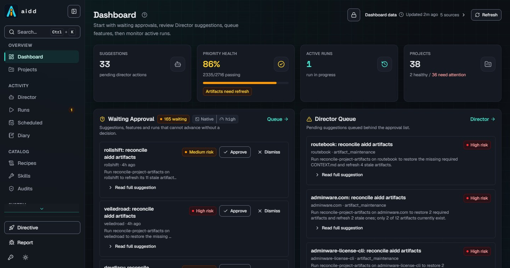

{kind=link}
Ingest the codebase
Add application roots in Settings. Any folder with an
.aidd/ contract becomes a project,
including foreign stacks.
Plan → run → audit → review
A local control panel for planning AI coding work and reviewing the results.
Point it at a codebase, give it a spec, and choose the agent or model you already use. aidd builds the backlog, runs bounded agent sessions, records validation results, and flags incomplete or blocked work for review. Manage one project or several from the same local panel.
How it works
aidd turns a spec into backlog items, selects eligible work, launches bounded agent sessions, and checks completion reports against feature status. Blocked work is kept visible for review.

Add application roots in Settings. Any folder with an
.aidd/ contract becomes a project,
including foreign stacks.
Onboarding turns a plain-language spec into dependency-ordered feature work with verifiable acceptance criteria.
Use Claude Code, Cline, Codex, Grok, OpenCode, or KiloCode, or OpenAI-compatible endpoints including OpenAI, LM Studio, and Ollama.
The agent is instructed to run the project's required checks and report the results, including live browser verification when the acceptance criteria call for it. Review the evidence and check coverage.
Use the run history, iteration logs, and code diffs to review what changed. Usage data is included when available. Resolve blocked work and approval requests before continuing.
Where it fits
aidd brings a feature backlog, repeatable workflows, run history, and review queues into one local application. Whether you need it depends on how you want to manage the work.
You work across repositories or reuse workflows, and want to track acceptance criteria, validation results, and work that needs approval.
aidd is not the coding agent. If your current sessions and project tools already give you the tracking you need, it may add more process than you want.
Hosted agents make it easy to hand off work without keeping a local machine running. Pricing, sandbox access, and the evidence returned with a run vary by provider.
aidd: runs locally through your chosen CLI or model backend, with iteration and wall-clock limits. Usage is recorded when the backend reports it; provider charges still apply.
Kanban boards, worktree apps, and terminal managers provide useful views of active sessions and diffs. Planning depth, automated gates, and platform support depend on the product and configuration.
aidd: ties runs to a feature backlog and acceptance criteria, records validation results, and flags blocked work for review.
Spec-driven kits help turn an idea into structured requirements. How those requirements reach an agent and how results are checked depends on the kit and workflow.
aidd: connects the spec to dependency-ordered work, acceptance criteria, coding runs, and a queue for decisions that need you.
Build results
aidd built and repaired real applications through seven different creation lanes. The runs were there to find rough edges, file the failures, fix them, and leave a public trail.
All seven are published in full - app snapshots, run ledgers, iteration evidence, and scrubbed transcripts - in the build-proofs repository, including the lane that failed. This is first-party evidence, not a benchmark or an independent audit.
| Lane | App | Stack | Result |
|---|---|---|---|
| Fresh scaffold from a spec | Habit tracker | Bun + TS + React | 25/25 features passing, gate clean, roughly 2.5 h |
| Third-party template init | Kanban board | Vite + React | 23/23 features, 10/10 headless acceptance scenarios in the gate |
| Full-stack template init | SMB infrastructure dashboard | Bun + Elysia + React + Drizzle | 26 features passing plus one retained remediation record, 30-step gate green |
| Existing-codebase ingest | Flask tutorial app | Python + Flask | Ingested and audited the existing Flask app, then completed a separate security-remediation phase under its pytest gate. The initial ingest was metadata-only; remediation changed application code. |
| GitHub-template clone | Pantry tracker | PowerShell + Pode + htmx | 26/26 features, Pester 88/88, analyzer clean |
| Local model only | Markdown TOC tool | Bun + TS, LM Studio, no cloud calls | 0/14 features. Five coding runs finished nothing, and the completion contract refused to record success. Published exactly as it ran. |
| Agent-driven build | Margin calculator | Bun + Elysia + React + Drizzle | 29/29 features across 48 supervised iterations, gate green at the end |
Trust model
The default posture is deliberately plain: local data, no account, explicit model backends, bounded runs, and documented write surfaces.
The runtime, panel, ledger, and project metadata live locally. Coding runs send prompts and relevant project content to the backend you choose, which may be a cloud service or a local model.
There is no aidd account or hosted control plane, and aidd sends no
telemetry. Configured integrations and downloads you initiate can
also make network requests. The write allowlist documents what lives
under .aidd/ and when source can change.
Iteration caps, wall-clock caps, dirty-tree guards, and parked decisions stop a run outright; cost and token budgets are warn-only, reported against the run rather than cutting it off mid-edit.
Included under FSL
Run aidd supervised or unattended, on one project or across a fleet. Every capability ships together under FSL. You provide access to the AI providers you choose.
One product
Everything aidd does ships together, for any number of projects and machines.
Source-available under FSL-1.1-ALv2, converting to Apache 2.0 two years after each release.
Install from source.aidd/ metadataGet it
Windows 11 + PowerShell 7 is the current smoke-tested path. Install Git and Bun 1.4.2 or newer, then run aidd directly from its source checkout.
git clone https://github.com/NomadicDaddy/aidd.git C:\Tools\aidd
Set-Location C:\Tools\aidd
bun install
bun run start:web
# Open http://127.0.0.1:3210
aidd ships under
FSL-1.1-ALv2: available for any use except making it available to others as a
competing commercial product or service, and each version automatically
becomes Apache 2.0 two years after release. The
.aidd/ contract format is an open spec
anyone may implement. Spernakit, the companion full-stack template, is
MIT.